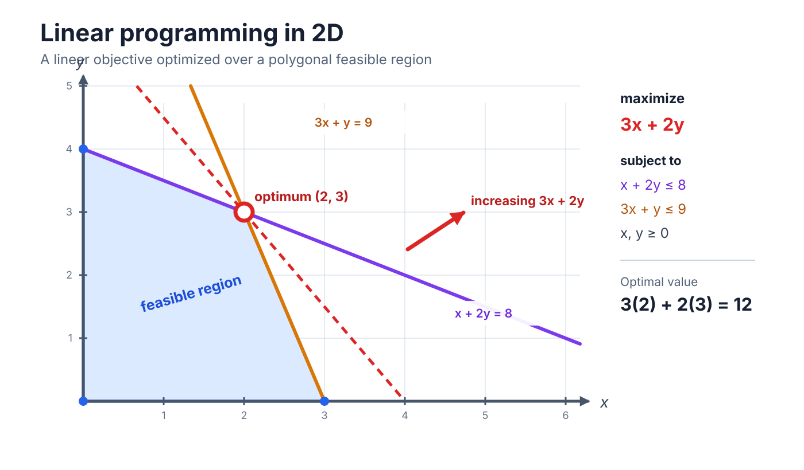
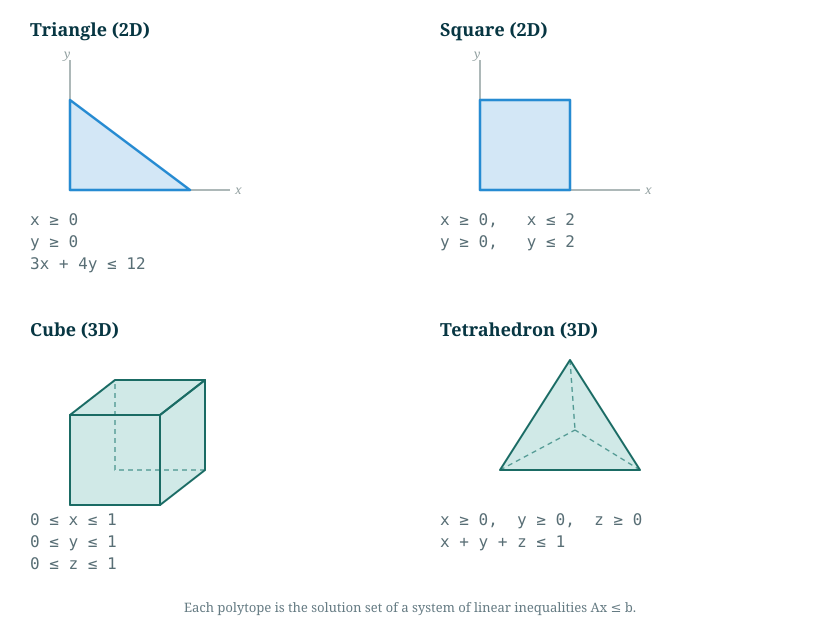
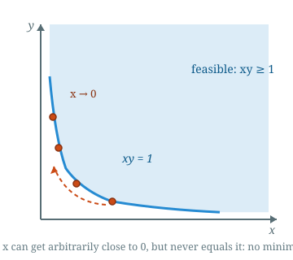
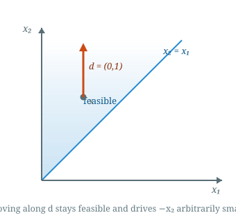
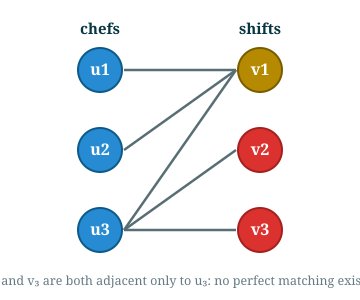

Introduction to Optimization
CO 250
Lecture 5
Kevin Shu
Lecture Outline
- Linear Programming Review
- Outcomes of Linear Programs
Linear Programming
A linear program (LP) is an optimization problem whose objective is a linear function and whose feasible set is the set of solutions to some linear inequality.
| min | $c^{\intercal} x$ |
| such that | $Ax \le b$ |

Linear Programs
The following is an LP
| max | $x_2$ |
| such that | $ x_1 + x_2 \le 1$ |
| $x_1 - x_2 \ge 0$ | |
| $x_2 \ge 0.$ |

Linear Programs
Feasible regions for linear programs are polytopes.

Linear Programming Feasibility
A point $x \in \R^n$ is feasible if $Ax \le b$.
A linear program is said to be feasible if it has some feasible point.
Some linear programs are infeasible: for example,
| min | $x_1$ |
| such that | $x_1 \le 1$ |
| $x_1 \ge 2$ |
No point can satisfy both $x_1 \le 1$ and $x_1 \ge 2$, so there are no feasible points.
Linear Programming Optimal Solutions
$x$ is optimal for a linear program if
- it is feasible, and
- for any feasible $y$, the objective satisfies $c^{\intercal}x \le c^{\intercal}y$
(where we use the min convention for the objective).
A linear program can be feasible and have no optimal point.
For example,
| min | $x_1$ |
| such that | $x_1 \le 0$ |
This is feasible (e.g. $x_1 = 0$), but for any feasible $x_1$ the point $x_1 - 1$ is also feasible and has a smaller objective. So no feasible point is optimal.
Linear Programming Unboundedness
A linear program is said to be unbounded if there are feasible points with arbitrarily small objective values.
The example from the previous slide is unbounded:
| min | $x_1$ |
| such that | $x_1 \le 0$ |
Note the use of the phrase `arbitrarily small', as opposed to infinitely small. Any feasible point has finite objective value, but there is no lower bound for those objective values in some cases.
Linear Programming Unboundedness
A more general nonlinear program can be feasible and bounded, but still have no optimal point.
| min | $x$ |
| such that | $xy \ge 1$ |
| $x, y \ge 0$ |

Linear programs are special! This kind of example cannot exist with linear programs.
Possible Outcomes for Linear Programs
Trichotomy theorem
Every linear program satisfies exactly one of the following:- It is infeasible.
- It has an optimal point.
- It is unbounded.
Possible Outcomes for Linear Programs
Possible Outcomes for Linear Programs
Examples of each case.
|
An infeasible problem
No point satisfies both bounds. |
A problem with an optimal point
The optimum is $x_1 = 0$. |
An unbounded problem
The objective can be made arbitrarily small. |
Checking Unboundedness
A linear program is unbounded if it has solutions which become arbitrarily large. How can we check that this is the case?
We can solve another LP!
Checking Unboundedness
A recession direction (also, a certificate of unboundedness) for the LP
| min | $c^{\intercal} x$ |
| such that | $Ax \le b$ |
is a vector $v$ so that \[Av \le 0 \text{ and }\] \[c^{\intercal} v = -1.\]
Theorem
A linear program is unbounded if and only if it is feasible and it has a recession direction.Checking Unboundedness
Example of a Recession Direction
| min | $-x_2$ |
| such that | $-x_1 \le 0$ |
| $x_1 - x_2 \le 0$ |
The direction $d = (0, 1)$ is a recession direction: $Ad \le 0$ and $c^{\intercal} d = -1$.
Starting from any feasible $x$, the points $x + td$ stay feasible for all $t \ge 0$, and the objective $-x_2$ decreases without bound. So the LP is unbounded.

Checking Unboundedness
Proof of unboundedness theorem (one direction)
Suppose there is a recession direction $v$, and that the LP has a feasible $x$, and consider $x+tv$ for $t \ge 0$.
Claim 1: $x+tv$ is feasible.
$A(x+tv) = Ax + t Av$, and since $Av \le 0$, we have that $Ax + tAv \le Ax \le b$, so $x+tv$ if feasible.
Claim 2: The LP is unbounded.
$c^{\intercal}(x+tv) = c^{\intercal}x + t c^{\intercal} v = c^{\intercal}x - t$, so by making $t$ large, this can be arbitrarily small.
Checking Unboundedness
Proof of unboundedness theorem (other direction)
Given a sequence $x_1, \dots, $ of feasible points with unbounded objective, want to produce a recession direction. This requires some analysis.
See the textbook for details.
Possible Outcomes for Linear Programs
Trichotomy theorem
Every linear program satisfies exactly one of the following:- It is infeasible.
- It has an optimal point.
- It is unbounded.
We can prove feasibility by writing down a feasible point satisfying $Ax \le b$, and we can prove unboundedness by writing down a recession direction.
How do we prove infeasibility?
Proving Infeasibility
Example: Bipartite Matching
The following is a bipartite perfect matching LP.

| $x_{11}$ | $= 1$ | ($u_1$) |
| $x_{21}$ | $= 1$ | ($u_2$) |
| $x_{31} + x_{32} + x_{33}$ | $= 1$ | ($u_3$) |
| $x_{11} + x_{21} + x_{31}$ | $= 1$ | ($v_1$) |
| $x_{32}$ | $= 1$ | ($v_2$) |
| $x_{33}$ | $= 1$ | ($v_3$) |
| $x_{11}, x_{21}, x_{31}, x_{32}, x_{33} \ge 0$ |
How can we prove this is infeasible?
Proving Infeasibility
Example: Bipartite Matching
The following is a bipartite perfect matching LP.
Look at the following inequalities
| $x_{11}$ | $= 1$ | ($u_1$) |
| $x_{21}$ | $= 1$ | ($u_2$) |
| $x_{31}$ | $\ge 0$ | |
| $x_{11} + x_{21} + x_{31}$ | $= 1$ | ($v_1$) |
Let's combine these inequalities as follows: add these inequalities with weights $(1,1,1,-1)$.
Proving Infeasibility
Example: Bipartite Matching
The following is a bipartite perfect matching LP.
Look at the following inequalities
| $(x_{11}$ | $= 1)$ | |
| + | $(x_{21}$ | $= 1)$ |
| + | $(x_{31}$ | $\ge 0)$ |
| - | $(x_{11} + x_{21} + x_{31}$ | $= 1)$ |
| = | $0$ | $\ge 2$ |
This is not a valid inequality!
Proving Infeasibility
To show infeasibility, we want to find a contradictory inequality, like $0 \ge 1$. How do we do this formally?
If we take the inequalities $Ax \le b$ and combine them with weights $y$, we get the inequality \[ y^{\intercal} A x \le y^{\intercal}b. \] as long as the weights are nonnegative, this is a valid inequality.
If the left side is 0 for all $x$, and the right side is negative, then this is a contradiction of the existence of $x$ satisfying these inequalities.
Proving Infeasibility
A certificate of infeasibility for the LP
| min | $c^{\intercal} x$ |
| such that | $Ax \le b$ |
is a vector $y \in \R^m$ so that $y \ge 0$ and \[ A^{\intercal}y = 0 \] \[ b^{\intercal}y > 0. \]
Theorem
A linear program is infeasible if and only if it has a certificate of infeasibility.
Proving Infeasibility
Example of a Certificate
Consider the infeasible system (in $Ax \le b$ form) \[ x_1 + x_2 \le -1, \qquad -2x_1 + x_2 \le -1, \qquad x_1 - 2x_2 \le -1, \] so $A = \begin{bmatrix} 1 & 1 \\ -2 & 1 \\ 1 & -2 \end{bmatrix}$ and $b = \begin{bmatrix} -1 \\ -1 \\ -1 \end{bmatrix}$.
Take $y = (1, 1, 1) \ge 0$. Then \[ A^{\intercal} y = (1 - 2 + 1,\ 1 + 1 - 2) = (0, 0), \qquad b^{\intercal} y = -3 < 0, \] so $y$ is a certificate of infeasibility.
Proving Optimality
Given LP
| min | $c^{\intercal} x$ |
| such that | $Ax \le b$ |
and a feasible point $x^*$, how can we show that this is optimal?
One approach: optimality is equivalent to the infeasibility of the following system of inequalities for all $\epsilon > 0$:
\[ \begin{pmatrix} A\\ c^{\intercal} \end{pmatrix} x \le \begin{pmatrix}b\\ c^{\intercal}x^* - \epsilon\end{pmatrix} \]Here, we use block matrix notation.
Proving Optimality
One approach: optimality is equivalent to the infeasibility of the following system of inequalities for all $\epsilon > 0$:
\[ \begin{pmatrix} A\\ c^{\intercal} \end{pmatrix} x \le \begin{pmatrix}b\\ c^{\intercal}x^* - \epsilon\end{pmatrix} \]
An infeasibility certificate for this is $\begin{pmatrix} y \\ y_0 \end{pmatrix}$ so that \[ A^{\intercal}y + c^{\intercal}y_0 = 0, \] \[ b^{\intercal}y + (c^{\intercal}x^* - \epsilon)y_0 > 0, \] and where $y, y_0 \ge 0$
Clearly, $y_0$ would need to be positive (otherwise the LP would be infeasible), and by scaling, we can make it equal to 1.
Proving Optimality
A certificate of optimality is some $y \ge 0$ so that \[ A^{\intercal}y = -c^{\intercal}, \] \[ b^{\intercal}y \ge -c^{\intercal}x^*. \]
If such a thing exists, then our earlier work on infeasibility certificates implies that $x^*$ is optimal.
Proving Optimality
Example of a Certificate
Consider the LP
| min | $-x_1 - x_2$ |
| such that | $x_1 \le 1$ |
| $x_2 \le 1$ |
so $c = (-1,-1)$, $A = \begin{bmatrix} 1 & 0 \\ 0 & 1 \end{bmatrix}$, and $b = (1,1)$.
The point $x^* = (1, 1)$ is feasible with objective $-2$.
Take $y = (1, 1) \ge 0$. Then \[ A^{\intercal} y = (1, 1) = -c^{\intercal}, \qquad b^{\intercal} y = 2 = -c^{\intercal} x^*, \] so $y$ is a certificate of optimality: $x^*$ is optimal.
Proving Optimality
Trichotomy theorem
Every linear program satisfies exactly one of the following:- It is infeasible.
- It has an optimal point.
- It is unbounded.
If an LP is infeasible, we can prove this with a certificate of infeasibility.
If an LP has an optimal point, we can prove this by providing an optimal point, and also a certificate of optimality.
If an LP is unbounded, we can prove this by providing a feasible point, and a recession direction.
How can we find these things algorithmically?